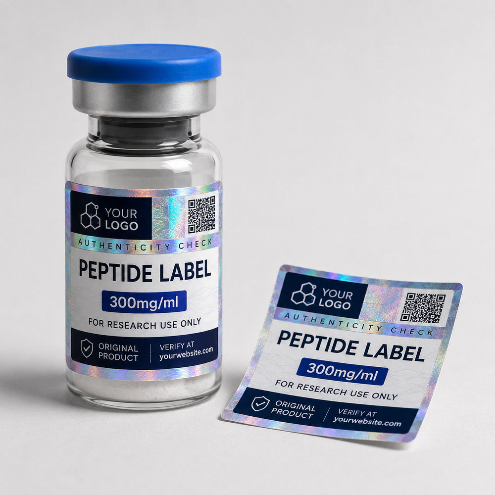
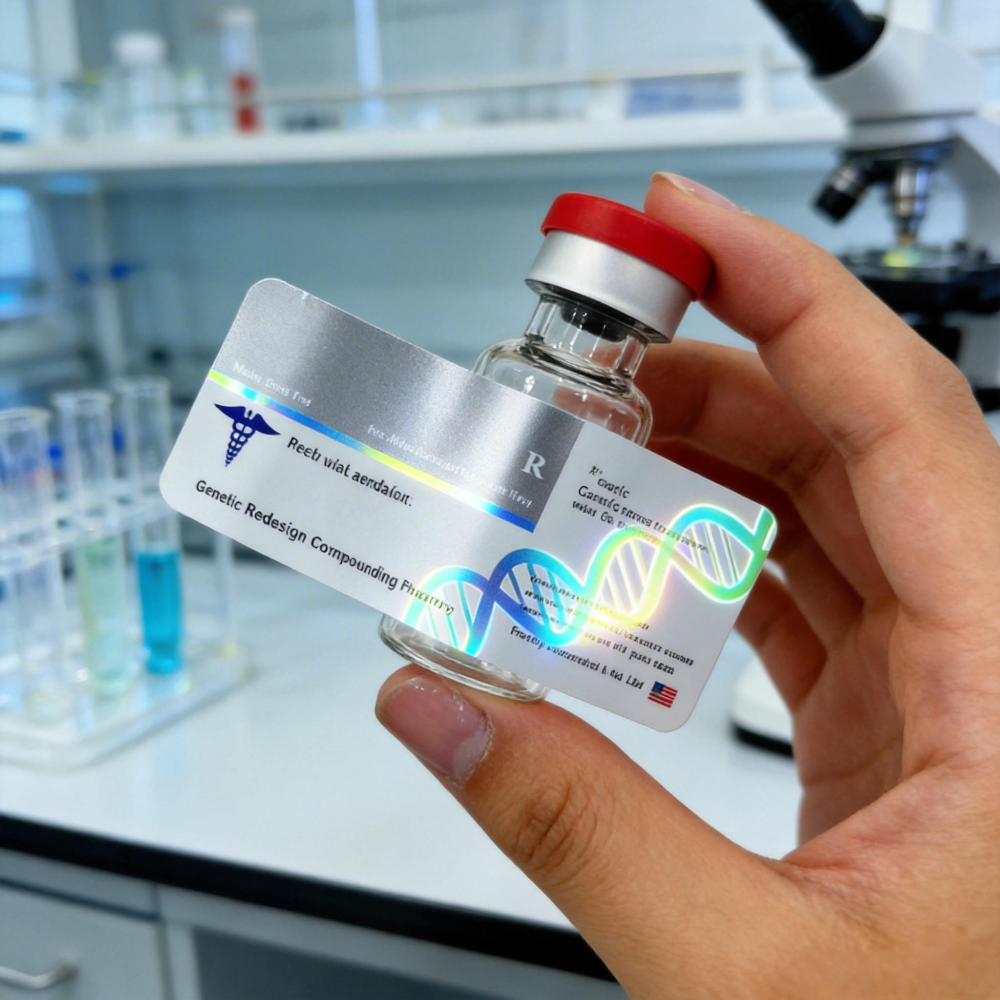
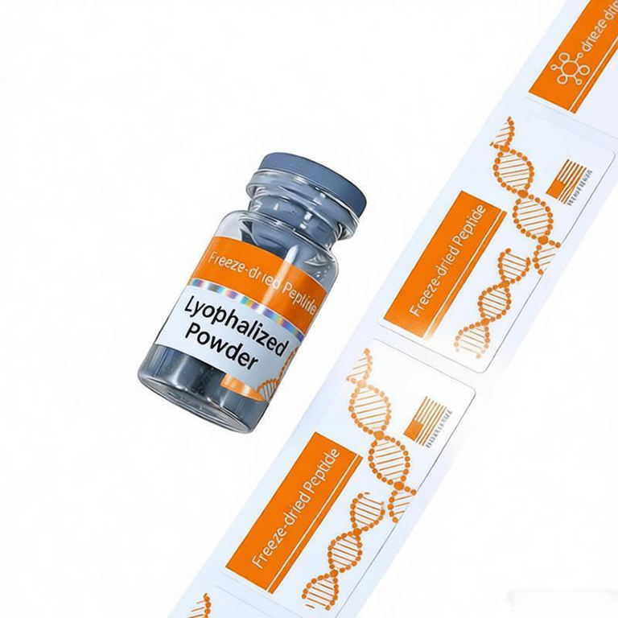

The short answer: edge lift is usually a system problem, not a single adhesive problem. A label can use a permanent adhesive and still fail when the face material is too stiff for the diameter, the glass is contaminated, or part of the label sits on the vial shoulder. The fastest route is to identify where the lift starts and recreate the real application conditions.

First identify the failure pattern
Look at the label before changing the specification. Where it fails is useful evidence. Lifting along both vertical edges points toward wrap tension, stiffness or insufficient contact time. Lifting near the top or bottom can indicate that the label crosses into a shoulder, heel or other changing curve. Random bubbles and loose zones are more consistent with surface contamination or uneven application pressure.
| Both vertical edges lift | Check bottle diameter, label width, material stiffness and whether the label is trying to spring back flat. |
|---|---|
| Top or bottom edge lifts | Check whether the label extends beyond the straight cylindrical wall into a shoulder or base curve. |
| One isolated corner lifts | Check handling, corner shape, initial pressure and whether that corner was touched during application. |
| Bubbles or loose patches | Inspect the glass for dust, oil, moisture, coating or residue and review the application method. |
| Label holds dry but fails cold | Test application temperature, condensation and the time allowed before cold or damp exposure. |
Small diameter creates constant peel force
A flat label naturally wants to return to a flat state. When it wraps around a small vial, the material and laminate are held in a tighter curve. A thick paper, heavy laminate or rigid specialty film can place more continuous force on the label edges than a thin, conformable construction. This is why the same material may look fine on a large supplement bottle and lift on a 2 ml or 5 ml vial.
Do not judge conformability by the face material alone. Ink coverage, laminate, varnish and metallic layers all contribute to the final construction. Ask the printer to evaluate the complete label, not just the adhesive name.
Keep the label on the straight wall
Measure the usable cylindrical band, not the overall bottle height. The neck, shoulder and rounded base can reduce the safe label area substantially. Even a subtle change in diameter can stop full adhesive contact. A shorter label that sits entirely on the straight wall often performs better than a taller label that appears to use every millimeter of glass.


Surface preparation matters more than it looks
Glass can appear clean while carrying skin oil, release residue, dust or moisture. Apply test labels to dry vials that represent the real production surface. Avoid touching the adhesive or the final application zone. Use firm, even pressure across the full label and pay attention to the closing edge.
Adhesives also need time to build their final bond. If a vial is labeled and immediately packed, chilled or handled, the result may differ from a sample that rested under stable conditions. Ask the material supplier or printer for the relevant application guidance, then reproduce that sequence in your own test.
Vial adhesion test checklist
- Test on the exact vial supplier, size and surface used in production
- Record bottle diameter and usable straight-wall height
- Apply with clean hands or gloves to a dry application zone
- Use the same manual or machine application method planned for production
- Inspect the closing edge, top edge and bottom edge after application
- Repeat the handling, packing, cold and moisture conditions the vial will actually meet
- Keep one approved sample and its material specification for reorders
Permanent adhesive is not a universal answer
“Permanent” describes the intended bond category, not guaranteed performance on every glass surface and in every environment. Adhesive selection depends on the substrate, application temperature, service conditions and label construction. A more aggressive adhesive may help one problem while creating another, such as difficult repositioning during manual application.
For a custom order, provide the vial material, diameter, storage and handling notes, label size, and any failed sample photos. That information is more useful than requesting the strongest available glue without context.
Rounded corners and an intentional gap can help
Sharp corners are easier to catch during handling. Rounded corners reduce that exposed point, although they cannot compensate for a poor material or surface match. For wraparound labels, decide whether the design uses a small gap or an overlap. An overlap changes the final contact from adhesive-to-glass to adhesive-to-label in one area, so it should be treated as a deliberate construction and physically tested.
What to send before a proof is prepared
Send the actual vial diameter, straight-wall height, a clear side photo, target label dimensions, quantity and intended storage conditions. If a previous label failed, include photos showing where and when it lifted. RP can use those details to prepare a practical label layout and material direction, but the final approval should still include a test on the real bottle.
Fix the cause before printing the full order
Send your vial photo, diameter, current label size and a close-up of any lifted edge. We can review the application area and prepare a free digital proof for the revised label.
Chat on WhatsAppFAQ
Why do labels lift at the edges on small glass vials?
The vial may be too tightly curved for the complete label construction, the label may cross a changing curve, or the glass may contain oil, moisture or residue. Application pressure and the time before handling also matter.
What label material conforms best to a small vial?
A thinner, flexible film is often easier to wrap around a tight diameter than a rigid construction. The correct choice still depends on the actual glass, finish, adhesive and storage conditions.
Should a peptide vial label overlap?
An overlap can work when it is designed and tested as part of the specification. Many buyers prefer a controlled gap because it keeps the adhesive in contact with glass rather than another label surface.